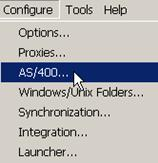
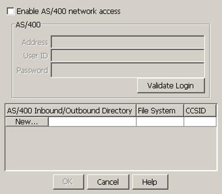
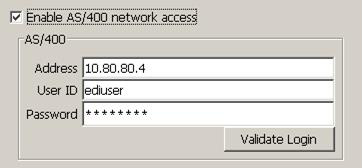

| AS2 Checklist / AS/400 PC Network Access Setup | |
Follow the instructions below to configure the Cleo Harmony application to access files on the AS/400.
On the Cleo Harmony menu bar, select .

The following display panel will appear:

In the top portion of the panel:

Select the Enable AS/400 network access check box
In the Address field, enter the IP address of the remote AS/400
In the User ID and Password fields, enter a valid user ID / password on the remote AS/400. Use [Validate Login] to verify the entries. This user must have at least "All Object Access" system privilege if accessing native files that are not owned by this user.